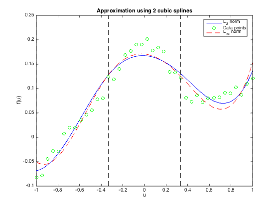

% Section 6.5.3, Figure 6.20 % Boyd & Vandenberghe "Convex Optimization" % Original by Lieven Vandenberghe % Adapted for CVX by Joelle Skaf - 10/03/05 % (a figure is generated) % % Given data u_1,...,u_m and v_1,...,v_m in R, the goal is to fit to the % data piecewise polynomials with maximum degree 3 (with continuous first % and second derivatives). % The [0,1] interval is divided into 3 equal intervals: [-1, -1/3], % [-1/3,1/3], [1/3,1] with the following polynomials defined on each % interval respectively: % p1(t) = x11 + x12*t + x13*t^2 + x14*t^3 % p2(t) = x21 + x22*t + x23*t^2 + x24*t^3 % p3(t) = x31 + x32*t + x33*t^2 + x34*t^3 % L2-norm and Linfty-norm cases are considered % Input Data n=4; % variables per segment m=40; randn('state',0); % generate 50 points ui, vi u = linspace(-1,1,m); v = 1./(5+40*u.^2) + 0.1*u.^3 + 0.01*randn(1,m); a = -1/3; b = 1/3; % boundary points u1 = u(find(u<a)); m1 = length(u1); u2 = u(find((u >= a) & (u<b))); m2 = length(u2); u3 = u(find((u >= b))); m3 = length(u3); A1 = vander(u1'); A1 = fliplr(A1(:,m1-n+[1:n])); A2 = vander(u2'); A2 = fliplr(A2(:,m2-n+[1:n])); A3 = vander(u3'); A3 = fliplr(A3(:,m3-n+[1:n])); %L-2 fit fprintf(1,'Computing splines in the case of L2-norm...'); cvx_begin variables x1(n) x2(n) x3(n) minimize ( norm( [A1*x1;A2*x2;A3*x3] - v') ) %continuity conditions at point a [1 a a^2 a^3]*x1 == [1 a a^2 a^3]*x2; [0 1 2*a 3*a^2]*x1 == [0 1 2*a 3*a^2]*x2; [0 0 2 6*a ]*x1 == [0 0 2 6*a ]*x2; %continuity conditions at point b [1 b b^2 b^3]*x2 == [1 b b^2 b^3]*x3; [0 1 2*b 3*b^2]*x2 == [0 1 2*b 3*b^2]*x3; [0 0 2 6*b ]*x2 == [0 0 2 6*b ]*x3; cvx_end fprintf(1,'Done! \n'); % L-infty fit fprintf(1,'Computing splines in the case of Linfty-norm...'); cvx_begin variables xl1(n) xl2(n) xl3(n) minimize ( norm( [A1*xl1;A2*xl2;A3*xl3] - v', inf) ) %continuity conditions at point a [1 a a^2 a^3]*xl1 == [1 a a^2 a^3]*xl2; [0 1 2*a 3*a^2]*xl1 == [0 1 2*a 3*a^2]*xl2; [0 0 2 6*a ]*xl1 == [0 0 2 6*a ]*xl2; %continuity conditions at point b [1 b b^2 b^3]*xl2 == [1 b b^2 b^3]*xl3; [0 1 2*b 3*b^2]*xl2 == [0 1 2*b 3*b^2]*xl3; [0 0 2 6*b ]*xl2 == [0 0 2 6*b ]*xl3; cvx_end fprintf(1,'Done! \n'); % evaluate the interpolating polynomials using Horner's method u1s = linspace(-1.0,a,1000)'; p1 = x1(1) + x1(2)*u1s + x1(3)*u1s.^2 + x1(4).*u1s.^3; p1l1 = xl1(1) + xl1(2)*u1s + xl1(3)*u1s.^2 + xl1(4).*u1s.^3; u2s = linspace(a,b,1000)'; p2 = x2(1) + x2(2)*u2s + x2(3)*u2s.^2 + x2(4).*u2s.^3; p2l1 = xl2(1) + xl2(2)*u2s + xl2(3)*u2s.^2 + xl2(4).*u2s.^3; u3s = linspace(b,1.0,1000)'; p3 = x3(1) + x3(2)*u3s + x3(3)*u3s.^2 + x3(4).*u3s.^3; p3l1 = xl3(1) + xl3(2)*u3s + xl3(3)*u3s.^2 + xl3(4).*u3s.^3; us = [u1s;u2s;u3s]; p = [p1;p2;p3]; pl = [p1l1;p2l1;p3l1]; % plot function and cubic splines d = plot(us,p,'b-',u,v,'go', us,pl,'r--',... [-1 -1], [-0.1 0.25], 'k--', [1 1], [-0.1 0.25], 'k--', ... [a a], [-0.1 0.25], 'k--', [b b], [-0.1 0.25], 'k--'); title('Approximation using 2 cubic splines'); xlabel('u'); ylabel('f(u)'); legend('L_2 norm','Data points','L_{\infty} norm', 'Location','Best'); % print -deps splineapprox.eps
Computing splines in the case of L2-norm...
Calling SDPT3 4.0: 47 variables, 13 equality constraints
For improved efficiency, SDPT3 is solving the dual problem.
------------------------------------------------------------
num. of constraints = 13
dim. of socp var = 41, num. of socp blk = 1
dim. of free var = 6 *** convert ublk to lblk
*******************************************************************
SDPT3: Infeasible path-following algorithms
*******************************************************************
version predcorr gam expon scale_data
NT 1 0.000 1 0
it pstep dstep pinfeas dinfeas gap prim-obj dual-obj cputime
-------------------------------------------------------------------
0|0.000|0.000|2.7e+00|3.7e+01|5.3e+03| 0.000000e+00 0.000000e+00| 0:0:00| chol 1 1
1|1.000|0.992|5.5e-06|4.0e-01|1.6e+01|-5.556583e-03 -4.475983e+00| 0:0:00| chol 1 1
2|1.000|0.964|5.9e-07|2.4e-02|2.9e-01|-1.143822e-02 -1.665989e-01| 0:0:00| chol 1 1
3|0.940|0.914|2.5e-07|3.0e-03|1.6e-02|-1.120732e-01 -1.224254e-01| 0:0:00| chol 1 1
4|0.986|0.986|1.3e-07|1.4e-04|2.1e-04|-1.165416e-01 -1.165974e-01| 0:0:00| chol 1 1
5|0.989|0.988|7.2e-09|8.8e-06|4.1e-06|-1.166027e-01 -1.165942e-01| 0:0:00| chol 1 1
6|0.992|0.985|1.8e-09|1.4e-07|6.4e-08|-1.166034e-01 -1.166032e-01| 0:0:00| chol 1 1
7|1.000|0.961|1.3e-11|4.7e-09|1.4e-09|-1.166034e-01 -1.166034e-01| 0:0:00|
stop: max(relative gap, infeasibilities) < 1.49e-08
-------------------------------------------------------------------
number of iterations = 7
primal objective value = -1.16603357e-01
dual objective value = -1.16603352e-01
gap := trace(XZ) = 1.38e-09
relative gap = 1.12e-09
actual relative gap = -4.42e-09
rel. primal infeas (scaled problem) = 1.27e-11
rel. dual " " " = 4.74e-09
rel. primal infeas (unscaled problem) = 0.00e+00
rel. dual " " " = 0.00e+00
norm(X), norm(y), norm(Z) = 1.5e+00, 1.9e+00, 1.6e-01
norm(A), norm(b), norm(C) = 1.3e+01, 2.0e+00, 1.7e+00
Total CPU time (secs) = 0.10
CPU time per iteration = 0.01
termination code = 0
DIMACS: 1.3e-11 0.0e+00 6.8e-09 0.0e+00 -4.4e-09 1.1e-09
-------------------------------------------------------------------
------------------------------------------------------------
Status: Solved
Optimal value (cvx_optval): +0.116603
Done!
Computing splines in the case of Linfty-norm...
Calling SDPT3 4.0: 126 variables, 53 equality constraints
For improved efficiency, SDPT3 is solving the dual problem.
------------------------------------------------------------
num. of constraints = 53
dim. of socp var = 80, num. of socp blk = 40
dim. of linear var = 40
dim. of free var = 6 *** convert ublk to lblk
*******************************************************************
SDPT3: Infeasible path-following algorithms
*******************************************************************
version predcorr gam expon scale_data
NT 1 0.000 1 0
it pstep dstep pinfeas dinfeas gap prim-obj dual-obj cputime
-------------------------------------------------------------------
0|0.000|0.000|4.5e+01|5.9e+01|1.1e+04| 0.000000e+00 0.000000e+00| 0:0:00| chol 1 1
1|0.991|0.990|4.0e-01|6.8e-01|7.7e+01|-2.313753e-04 -1.682246e+01| 0:0:00| chol 1 1
2|1.000|0.999|2.3e-05|1.1e-02|7.5e+00|-2.255710e-04 -7.490910e+00| 0:0:00| chol 1 1
3|1.000|0.945|5.7e-05|1.5e-03|4.2e-01|-1.036680e-03 -4.179648e-01| 0:0:00| chol 1 1
4|0.997|0.887|3.1e-06|2.7e-04|1.4e-01|-1.142045e-02 -1.515088e-01| 0:0:00| chol 1 1
5|1.000|0.685|1.4e-05|9.2e-05|4.6e-02|-1.557158e-02 -6.132604e-02| 0:0:00| chol 1 1
6|1.000|0.092|5.1e-06|8.5e-05|3.8e-02|-2.134726e-02 -5.863361e-02| 0:0:00| chol 2 2
7|1.000|0.427|4.6e-06|5.0e-05|2.2e-02|-2.518940e-02 -4.699203e-02| 0:0:00| chol 2 2
8|1.000|0.467|1.9e-06|2.7e-05|1.1e-02|-2.900580e-02 -3.963163e-02| 0:0:00| chol 2 1
9|1.000|0.549|5.4e-07|8.3e-05|4.5e-03|-3.107602e-02 -3.531163e-02| 0:0:00| chol 1 1
10|1.000|0.931|9.1e-09|3.5e-05|3.9e-04|-3.187530e-02 -3.223669e-02| 0:0:00| chol 1 1
11|0.984|0.984|1.9e-10|3.0e-06|6.8e-06|-3.203558e-02 -3.204147e-02| 0:0:00| chol 1 1
12|0.992|0.989|3.5e-12|5.2e-08|1.2e-07|-3.203827e-02 -3.203838e-02| 0:0:00| chol 1 1
13|0.993|0.989|1.7e-12|8.9e-10|1.8e-09|-3.203833e-02 -3.203834e-02| 0:0:00|
stop: max(relative gap, infeasibilities) < 1.49e-08
-------------------------------------------------------------------
number of iterations = 13
primal objective value = -3.20383334e-02
dual objective value = -3.20383351e-02
gap := trace(XZ) = 1.81e-09
relative gap = 1.70e-09
actual relative gap = 1.56e-09
rel. primal infeas (scaled problem) = 1.72e-12
rel. dual " " " = 8.88e-10
rel. primal infeas (unscaled problem) = 0.00e+00
rel. dual " " " = 0.00e+00
norm(X), norm(y), norm(Z) = 8.2e-01, 2.4e+00, 2.1e-01
norm(A), norm(b), norm(C) = 1.8e+01, 2.0e+00, 1.7e+00
Total CPU time (secs) = 0.18
CPU time per iteration = 0.01
termination code = 0
DIMACS: 1.7e-12 0.0e+00 1.3e-09 0.0e+00 1.6e-09 1.7e-09
-------------------------------------------------------------------
------------------------------------------------------------
Status: Solved
Optimal value (cvx_optval): +0.0320383
Done!
